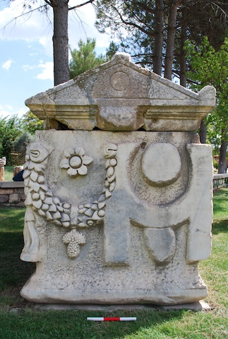

For the next two years I'll be collaborating with the Art of Making project. The project investigates the processes involved in the carving of stone during the Roman period, in particular it aims at analysing them using the insights and understanding Peter Rockwell (son of Norman Rockwell) developed during his lifelong experience as a sculptor. Eventually we will present these results by means of a freely accessible online digital resource that guides users through examples of stone carving. In this post I just wanted to report on the very first discussions I had with the sculpture and art scholars I'm working with, to the purpose of creating a shared model for this domain.
The project started this July, it is based at King’s College London and is funded by the Leverhulme Trust. I'm more involved with the digital aspects of the project, and as usual one of the first steps involved in the building of a digital resource (in particular, a database-backed digital resource) is the construction of a conceptual model that can represent the main types of things being dealt with.
In other words, it is fundamental to identify which are the things our database and web-application should 'talk about'; later on, this model can be refined and extended so to become an abstract template of the data-manipulation tasks the software application must be capable of supporting (e.g. entering data into the system, searching and visualising them).
Here's a nice example of the sculptures (a sarcophagus from Aphrodisias) that constitute our 'source' materials:

To this purpose, a few weeks ago we had a very productive brainstorming session aimed at fleshing out the main items of interest in the world of sculpture. This is a very first step towards the construction of a formal model for this domain; nonetheless, I think that we have already managed to pin down the key elements we're going to be dealing with in the next two years.
Here's a list of the main objects we identified:
We encoded the results of our discussions in a mind map for better readability, and also in order to use a technology that would make it easier to share our findings later on. I added it below.. (in case the interactive image doesn't work, you can find it here too).
After a few weeks of work we did a reiteration of the conceptual map above. The good news was that it soon became evident to us that we got it quite right on the first round; that is, we didn't really feel like adding or removing anything from the map.
On the other hand, we thought we should try to add some relations (= links, arcs) among the concepts (=bubbles) previously identified, so to characterize their semantics a bit more. I had a go at adding some relations first, and here's the result:
I should specify that I have no knowledge whatsoever of the domain of sculpture, so the stuff I added to the map came out entirely from the (little) research I've been doing on the subject (on and off) during the last weeks.
At the same time, also Will and Ben (the art historians I'm collaborating with) worked independently at the task of fleshing out the mind map with more relations. Needeless to say, what they came up with is way more dense and intricate than what I could have ever imagined! This is probably not surprising, as one would expect to see a significant difference between a non-expert's representation of a subject domain and another one which is instead created by experts. Still, it was interesting to see it happening with my own eyes! Here it is:
The next step will be trying to reduce the (natural) complexity of the portion of the world we are representing to a more manageable size… then, formalize it, and start building our database based on that.. stay tuned for more!
Cite this blog post:
2019
paper Modeling publications in SN SciGraph 2012-2019
Workshop on Scholarly Digital Editions, Graph Data-Models and Semantic Web Technologies, Université de Lausanne, Jun 2019.
2014
paper Factoid-based Prosopography and Computer Ontologies: towards an integrated approach
Digital Scholarship in the Humanities, Dec 2014. doi: 10.1093/llc/fqt037
International Semantic Web Conference (ISWC-14), Riva del Garda, Italy, Oct 2014.
2013
New Technologies in Medieval and Renaissance Studies, (forthcoming). (part of the 'Envisioning REED in the Digital Age' collection)
New Perspectives on Medieval Scotland: 1093-1286, Woodbridge, Suffolk: Boydell and Brewer, Studies in Celtic History Series, Aug 2013.
2012
paper Capturing the Meaning of Roman Sculpture
Digital Humanities Symposium "Virtualisation and Heritage", York, Feb 2012. (Poster paper)
2011
Representing Knowledge in the Digital Humanities, Lawrence, Kansas, Sep 2011.
2010
LAP LAMBERT Academic Publishing, Aug 2010.
2009
paper Laying the Conceptual Foundations for Data Integration in the Humanities
Proc. of the Digital Humanities Conference (DH09), Maryland, USA, Jun 2009. pp. 211-215
2006
Poster paper presented at the 3rd European Semantic Web Conference (ESWC-06), Budva, Montenegro, Jun 2006.